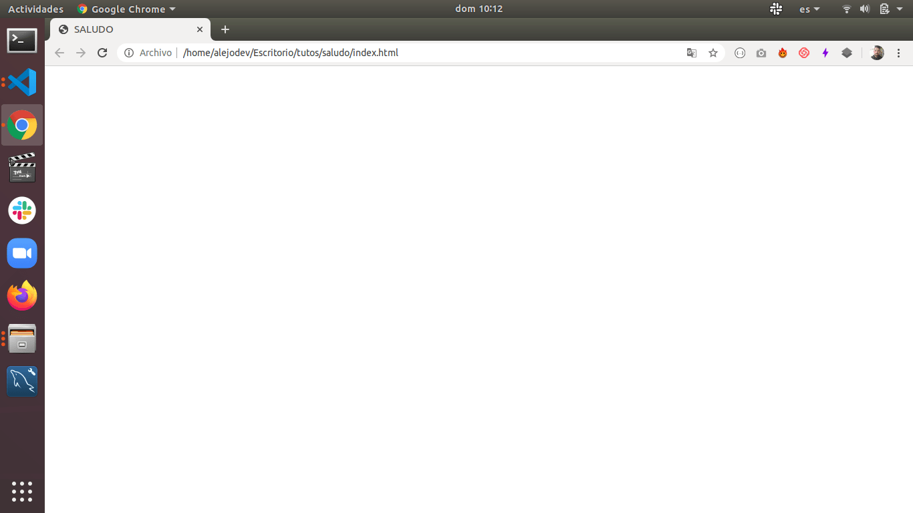
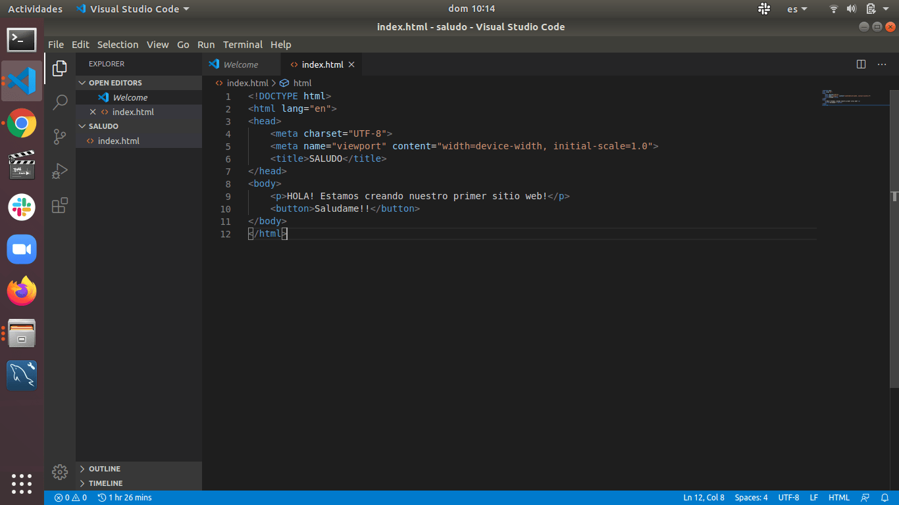

La mejor inversión es tu educación.
Gracias a esto he mantenido mi familia a flote a pesar de la hiperinflación
más alta del mundo de los últimos tiempos.
Programar es una actividad que cualquier persona a cualquier edad puede aprender, la diferencia está en que,
esta actividad requiere dedicación y tiempo. No necesita dinero, es gratis si así lo quieres.
Existen plataformas en las cuales uno paga para poder acceder a cursos con cierta metodología porque en
internet se
consiguen cosas pero no llevan un orden en específico lo cual confunde a las personas que están empezando.
Sin embargo
existen canales de youtube que aplican un orden para sus cursos gratuitos, de aquí la importancia de saber
orientarse y luego buscar
adecuadamente.
Existen también multiples caminos que puedes seguir para programar, ya que esta área es muy amplia y
cualquier
dirección que tomes está bien. Las áreas más comunes son: desarrollo web, desarrollo móvil, desarrollo de
escritorio y desarrollo de videojuegos.
Desarrollo web:
es la profesión más común, donde existen más desarrolladores y más demanda laboral. Se encarga de crear
software que se observa a través de los navegadores (Chrome, Firefox y otros) y para esto debes tener en
cuenta las siguientes tecnologías:
Html:
Es un lenguaje de marcado (no de programación) que permite visualizar el contenido en los navegadores.
Esto es muy fácil y lo puedes aprender en un día.
Css:
Es un lenguaje de cascada (no de programación) que permite darle estilos, colores, formas, animaciones, seleccionar fuentes,
configurar el website para que se pueda visualizar desde dispositivos móviles de forma adecuada.
Este punto empieza a ser un poco extenso, pero lo que necesitas realmente para empezar lo puedes aprender en un día.
Javascript:
Es un lenguaje de programación, permite atrapar eventos que suceden en el navegador por parte del usuario: click en un botón o enlace,
pasar el mause por encima de un elemento, ejecutar una tarea si el usuario usa el teclado y mucho más. Además,
javascript se encarga de envíar datos al backend (la parte que se encarga de la lógica o el modelo de negocio de nuestros sistemas)
y mostrar la respuesta del mismo en el navegador para que lo vean los usuarios.
Este tema si es complejo entenderlo por completo, pero puedes ir paso por paso, comprendiendo lo elemental para
poder empezar y trabajar en ello.
Cabe destacar que todos estos items están en constante evolución, es imposible aprender todo y más aún pensar que al aprender
gran parte de ello nos bastará, todas las tecnologías cambian, lo que nos obliga siempre estar estudiando. Recuerdo que
cuando era niño conocí un Médico de un familiar, que tenía una edad avanzada, con décadas de experiencia y se la pasaba con un libro
bajo el brazo, tal cual sucede con la programación.
Desarrollo móvil:
Existen básicamente dos formas de desarrollar para dispositivos móviles, la primera es usando las mismas tecnologías del desarrollo web
y la segunda es usando tecnologías propias o nativas de los dispositivos móviles. Cada una tiene su ventaja y desventaja pero,
en mi experiencia como programador, es más útil usar tecnologías que nos sirvan para casi todo porque puedes abarcar un mercado más
grande en cuanto a ofertas laborales se refiere, sin embargo es una visualización muy personal, el camino que sigas estará bien.
Desarrollo de escritorio:
Este punto es ciego para mi, no tengo experiencia en esta área para indicarte qué camino seguir, solo tengo el conocimiento
de que también se puede desarrollar con las tecnologías para la web que ya mencionamos. Te invito a investigar sobre ello a ver si te gusta
más que otro camino.
Desarrollo de videojuegos:
Un mundo aparte totalmente, tecnologías distintas y plataformas distintas, no sé absolutamente nada de esto pero tengo entendido
que es más complejo que otras áreas de desarrollo. En lo personal si tengo una buena oportunidad la tomaría e intentaría aprender.
De igual forma te invito a investigar a ver si te lanzas por este camino.
Luego de una larga pero necesaria introducción vamos hacer un ejemplo funcional de un website donde usaremos Html, Css y Javascript.
¿Qué necesitas? un editor de código y un navegador.
El editor de código que uso es VSCode y te dejo la url para que lo descargues AQUÍ.
Comencemos!
Abrimos el editor de código y creamos un archivo llamado index.html, generalmente, el index es la página principal de los sitios web.
Si estás usando VSCode al escribir html en el archivo van a salir unas opciones, selecciona html:5 para que te salga la estructura básica
y no tengas que escribirla.
El resultado de seleccionar html:5 será el siguiente:
El código en que debes enfocarte en este momento:
Todo lo que esté dentro de la etiqueta head:
las etiqueta meta y la etiqueta title, donde la primera aplica ciertas configuraciones y
la segunda va mostrar el título de nuestro sitio web en la pestaña del navegador. Las configuraciones de las etiquetas meta
en este caso básico indica el tipo de codificación de caracteres a usar o la estandarización de la misma.
La etiqueta meta viewport controla la composición en los navegadores móviles.
Vamos a colocarle un nombre a nuestro title:
El resultado de este cambio se ve en la pestaña superior de nuestro navegador, podemos buscar el archivo dentro de
nuestra carpeta, darle click derecho y seleccionar abrir con un navegador. (Chrome, Firefox o el que tengas instalado)

Todo lo que esté dentro de la etiqueta body:
El código que se encuentre en Body será el que se muestre en el website, vamos a colocar un texto y un botón para
ver el proceso:

Refrescamos el navegador y vemos el resultado:
Hemos usado dos etiquetas Html más, la etiqueta p y la etiqueta button, con la primera podemos escribir párrafos y con la segunda creamos
botones. Como puedes ver, lo que escribiste dentro de Body se ve en el navegador, genial! ya tenemos nuestro HTML listo, ahora
vamos aplicar estilos Css para que se vea un poco mejor.
Primero, escribimos una etiqueta llamada link que se muestra en este ejemplo en la linea 7, con esto estamos indicando que
estamos llamando a un archivo Css y que implemente su funcionalidad en el index.
Luego escribimos las clases Css. Idicamos configuraciones para body, p, button. (ya sabemos lo que son) y al final podemos ver
una clase button:hover, esto aplica un evento, cuando el mause pase sobre el botón va cambiar de estilos.
Refrescamos la página y vemos el resultado:
Al pasar el mause sobre el botón vemos como cambia de estilos:
Ya tenemos nuestro Html y nuestros estilos Css listos! ahora falta aplicar javascript para que el botón funcione
mostrando un alerta cuando demos click sobre el botón:
Primero, creamos una etiqueta script antes de finalizar la etiqueta body y agremos
la url donde llamamos al archivo script.js que acabamos de crear, ademas en la etiqueta button creamos
un parámetro llamado id pasandole el nombre único que debe tener el botón. En script.js colocamos
una pequeña funcionalidad, donde le indicamos que al hacer click el botón con ID button muestre
un alert con el saludo.
Refrescamos el navegador y damos click al botón:
Hemos finalizado nuestro primer sitio web! de esta forma es como nosotros desarrollamos, creamos un proyecto,
luego sus archivos, escribimos el código necesario y vamos probando como va funcionando. Espero que te guste y que comiences a
crear tus propios proyectos, al principio siempre es difícil pero la práctica hace al genio!
#Html
#Css
#Javascript
#Programación
"Una forma de apoyar la creación de contenido técnico y de calidad es donando la cantidad que
creas conveniente, si quieres que haga un post sobre un tema en específico no dudes en avisarme"